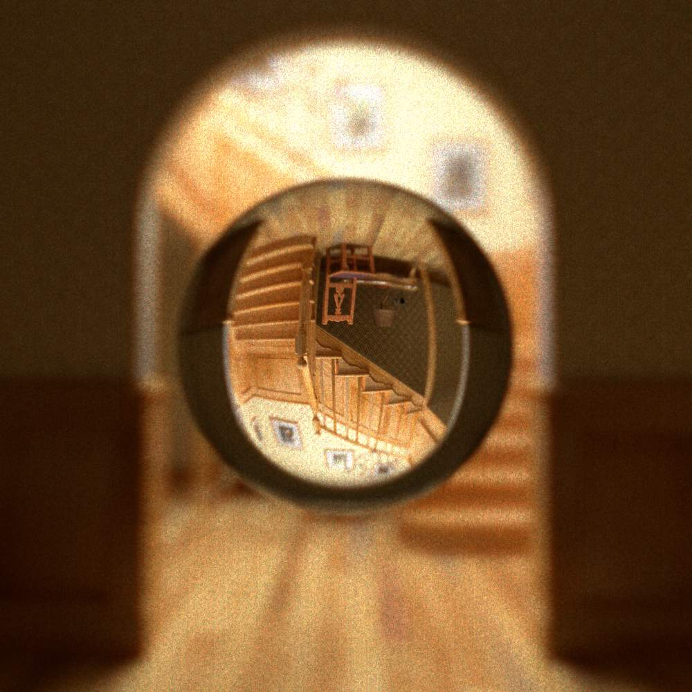
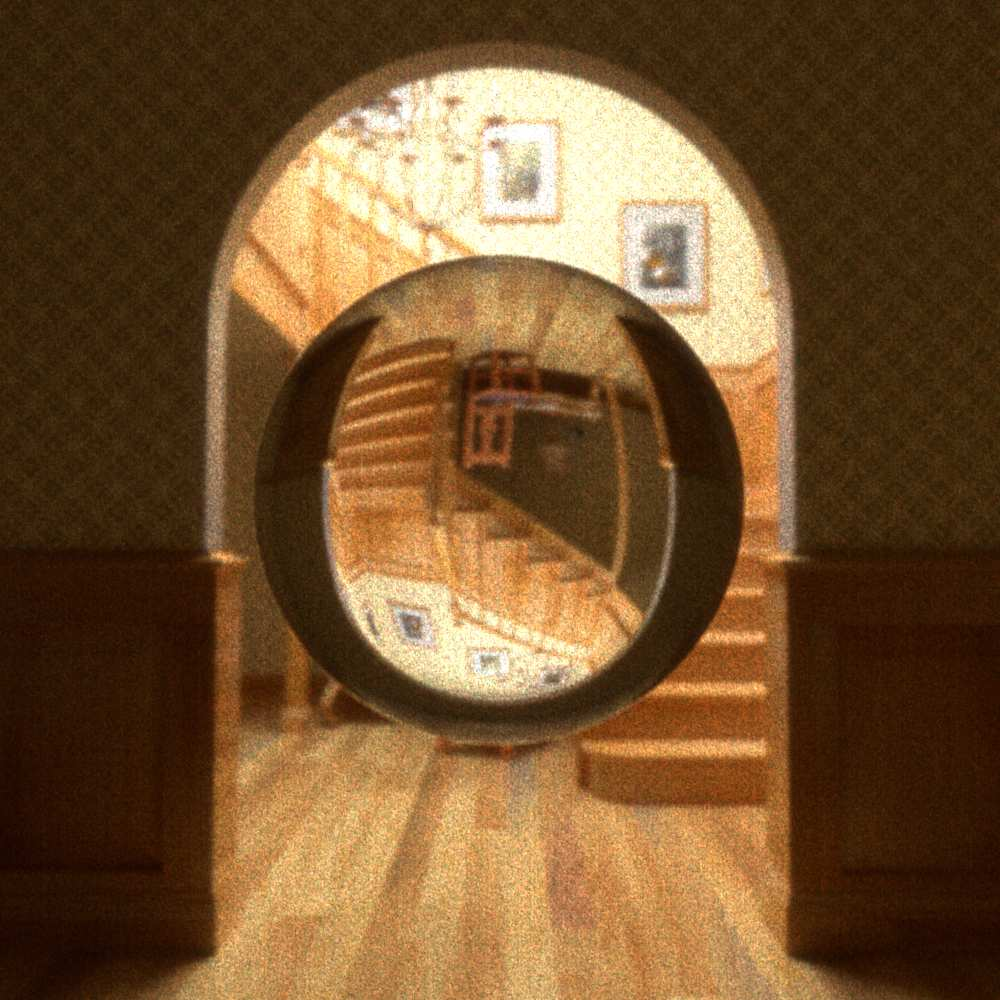
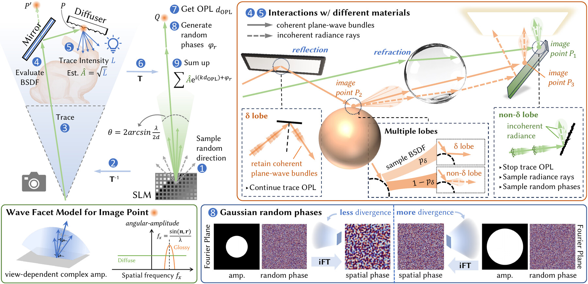
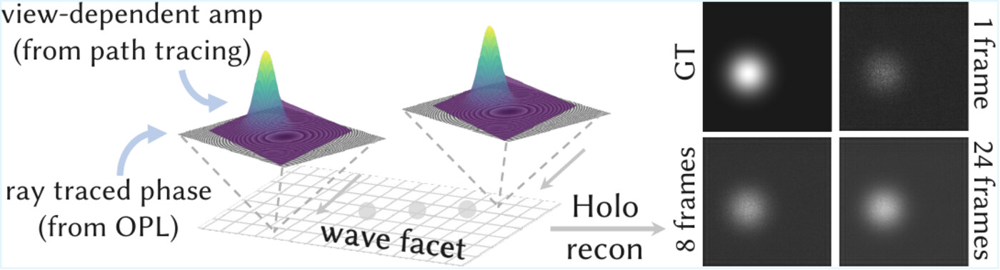
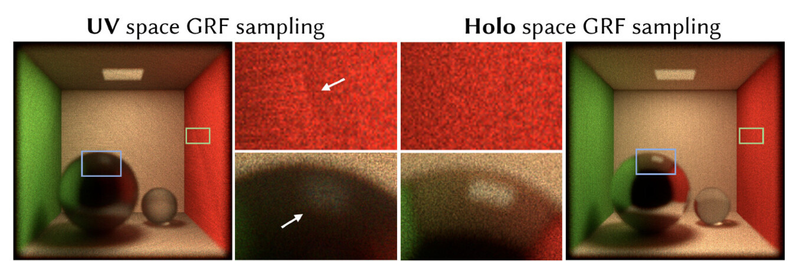
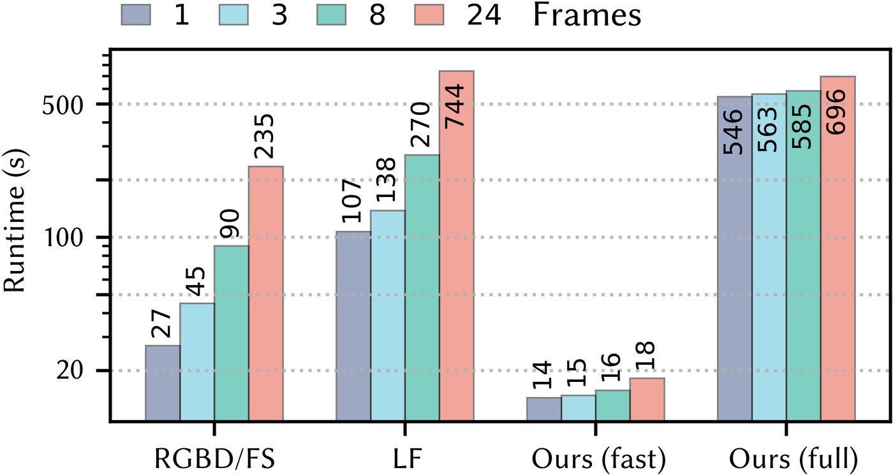
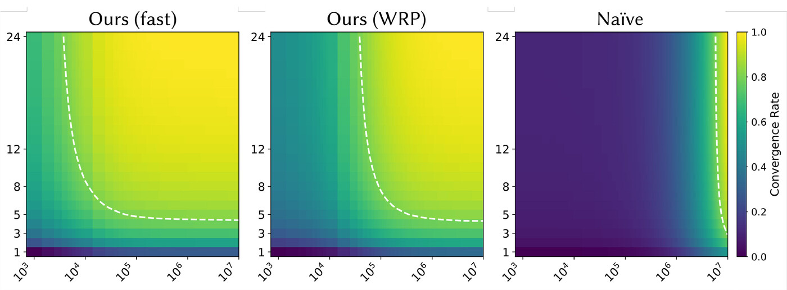
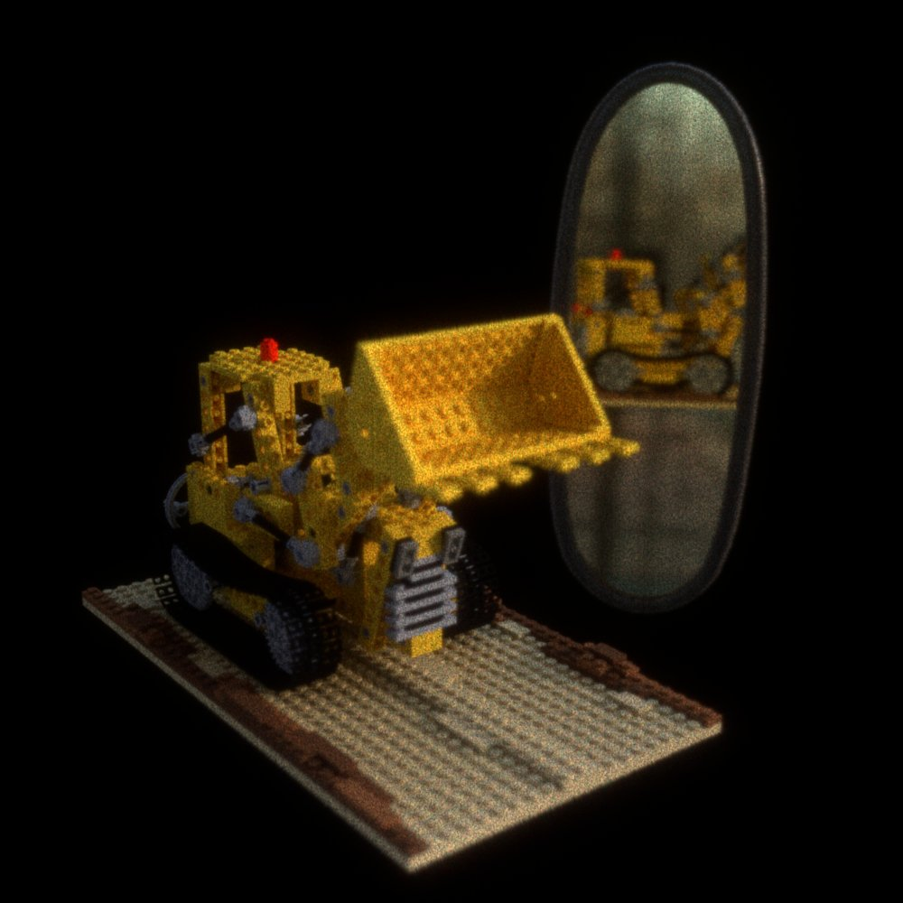
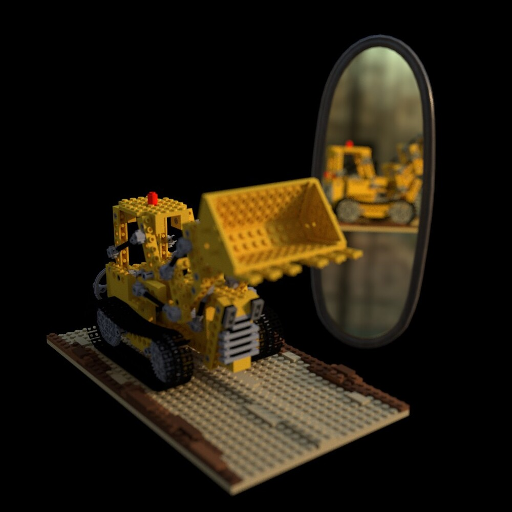

Tsinghua University
Tsinghua University Stanford University
Stanford UniversityStep 1 · Ray Sampling
Rayholo are sampled from each pixel on the SLM (recording plane) in hologram space with a random initial direction.
ACM SIGGRAPH 2026 (Trans. on Graphics-track)
* Equal contribution


HoloPathTracer creates holograms from path tracing scenes with physically accurate visual cues encoded, including (curved-surfaces) reflection and refraction, glossy materials, global illumination, natural defocus, and continuous view-dependent effects.
Holography offers unique advantages for delivering perceptual realism while preserving compact form factors in VR/AR. Its perceptual quality, however, hinges on encoding rich wavefronts of photorealistic scenes into interference patterns and then incoherently multiplexing the resulting wave fields for perception.
We present a physically accurate yet computationally efficient wave optics rendering framework leveraging path tracing to encode full 3D visual cues into phase holograms. Our Monte Carlo method solves the rendering equation and the Rayleigh-Sommerfeld integral simultaneously, generates multiple time-multiplexed random holograms with minimal additional cost through path reuse, and accelerates convergence with an ambient radiance cache.
Extensive simulations and experimental validations on a spatial light modulator-based display prototype demonstrate faithful holographic reconstructions of natural 3D cues and complex materials, including realistic defocus blur, view-dependent effects, highlights, and reflections.
Rayholo are sampled from each pixel on the SLM (recording plane) in hologram space with a random initial direction.
Rayholo is transformed into world space as Rayworld.
Rayworld is traced through the scene in world space to calculate correct light transport.
Upon intersecting a facet, scattering is evaluated according to its BSDF, where different lobes are sampled probabilistically.
The first non-delta BSDF sample is defined as the real image point P in world space. Before reaching P, the coherent plane-wave bundle is traced with OPLworld accumulated. After P, several incoherent radiance rays are traced to estimate the amplitude of the incident plane-wave bundle.
The virtual image point P' is calculated and mapped back into hologram space as Q through a coordinate transformation.
Based on the position of Q, OPLholo is determined.
Several random phase samples are selected from the pre-computed Gaussian random fields to model the incoherent scattering at P.
The contribution of each plane-wave bundle is calculated by combining the amplitude from Step 5 with the phase from Step 7 and Step 8, then coherently accumulated on the hologram recording plane.

Unlike image-based CGH methods, HoloPathTracer traces complete light transport paths from the SLM back to the light source, jointly accounting for the rendering equation and the Rayleigh–Sommerfeld integral. We decompose wave propagation using the angular spectrum method into coherent plane-wave bundles traveling in different directions. Since each bundle has a finite divergence angle, it can be propagated through ray tracing.
When a plane-wave bundle encounters a delta scattering event, we continue tracing it along the outgoing direction while accumulating the optical path length. For non-delta scattering, however, microscopic surface variations introduce random optical path fluctuations, so the subsequent phase no longer needs to be tracked deterministically. We instead sample a random phase to approximate the resulting incoherent superposition, which is statistically equivalent to intensity addition in expectation.
Intuitively, smooth surfaces preserve imaging capability and thus require accurate tracking of subsequent scene geometry. Rough surfaces largely destroy such imaging capability, so only the received intensity matters, which can be estimated by ordinary radiometric ray tracing.
Wave facets encode view-dependent amplitudes from path tracing and phases from ray-traced OPL. With initial random phase sampling, variable-frame multiplexing progressively approximates the ground-truth angular amplitude determined by the material BSDF.

Band-limited Gaussian random fields are precomputed on the hologram space. This keeps sampling density and effective phase bandwidth tied to the SLM recording plane, avoiding distortions caused by changes in facet normals or UV scaling.

We also propose a faster variant that combines ambient-light caching with a two-stage wave-recording-plane propagation scheme. Since only the random phase changes across time-multiplexed frames, HoloPathTracer can reuse the same ray paths, geometry, amplitudes, and OPL terms, making it well suited to emerging high-refresh-rate SLMs for efficient time multiplexing and more natural defocus.




The simulations compare HoloPathTracer with representative image-, layer-, and geometry-based CGH frameworks under changes in focus, viewpoint, and pupil size. RGB-D reconstructions suffer from noisy defocus around depth discontinuities, while focal stacks produce smoother defocus but tend to blur in-focus details. Light fields improve angular supervision, yet artifacts remain when the reconstruction departs from the predefined views or pupil conditions.
HoloPathTracer-Full most closely follows the Mitsuba reference across the tested scenes, preserving smooth refocus transitions, view-dependent effects, and imagery formed by lenses and mirrors. The texture-baked fast variant keeps the same depth and view cues with minor color or detail drift, trading a small visual loss for substantially faster multi-frame hologram generation.
@article{zhou2026holopathtracer,
author = {Zhou, Wenbin and Meng, Xiangyu and Xing, Jiankai and Liu, Xin and Choi, Suyeon and Peng, Yifan},
title = {HoloPathTracer: Fast and Accurate Wave Path Tracing for Holography},
journal = {ACM Transactions on Graphics},
volume = {45},
number = {4},
article = {39},
year = {2026},
doi = {10.1145/3811351}
}